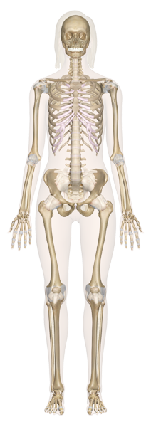
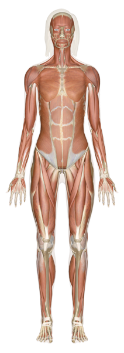

- Data Analysis |
Select a Human Anatomy System Below to Begin:
- Skeletal System
- Muscular System
- Cardiovascular System
- Digestive System
- Endocrine System
- Nervous System
- Respiratory System
- Urinary System
- Female Reproductive System
- Male Reproductive System
- 

- 


Selected System:
Skeletal System
The skeletal system includes all of the bones and joints in the body. Each bone is a complex living organ that is made up of many cells, protein fibers, and minerals. The adult human skeletal system consists of 206 bones, as well as a network of tendons, ligaments and cartilage that connects them. The skeletal system performs vital functions - support, movement, protection, blood cell production, calcium storage and endocrine regulation — that enable us to survive.Muscular System
The skeleton is covered by layers of skeletal muscle. Each muscle is attached to two or more bones so that when the muscle contracts (shortens) it produces MOVEMENT. Skeletal muscle makes up about 40 per cent of body weight. As well as producing movement, some muscles remain partially contracted for long periods to maintain the body’s posture. Muscles also help to maintain posture and circulate blood and other substances throughout the body.Cardiovascular System
The cardiovascular system consists of the heart and blood vessels (arteries, veins, and capillaries). It delivers oxygen and nutrients to the tissues and carries waste products to the organs responsible for elimination. The arteries carry blood from the heart to the rest of the body, and the veins carry blood back to the heart. An adult’s heart pumps nearly 4000 gallons of blood each day. Heart beats some 30 million times a yearDigestive System
The digestive system is made up of the gastrointestinal (GI) tract—also called the digestive tract—and the liver, pancreas, and gallbladder. The GI tract is a series of hollow organs joined in a long, twisting tube from the mouth to the anus. The hollow organs that make up the GI tract are the mouth, esophagus, stomach, small intestine, large intestine—which includes the rectum—and anus. Digestive system turn the food into nutrients which the body uses for energy, cell growth.Endocrine System
The endocrine system is the collection of glands that produce hormones that regulate metabolism, growth and development, tissue function, sexual function, reproduction, sleep, and mood, among other things. In general, the endocrine system is in charge of body processes that happen slowly, such as cell growth. The endocrine system is made up of the pituitary gland, thyroid gland, parathyroid glands, adrenal glands, pancreas, ovaries (in females) and testicles (in males).Nervous System
The nervous system is a complex network of nerves and cells that carry messages to and from the brain and spinal cord to various parts of the body.The nervous system includes both the Central nervous system and Peripheral nervous system. The Central nervous system is made up of the brain and spinal cord and The Peripheral nervous system is made up of the Somatic and the Autonomic nervous systems. Faster processes like breathing and body movement are controlled by the this system.Respiratory System
The human respiratory system is a series of organs responsible for taking in oxygen and expelling carbon dioxide. The primary organs of the respiratory system are lungs, which carry out this exchange of gases as we breathe. Through breathing, inhalation and exhalation, the respiratory system facilitates the exchange of gases between the air and the blood and between the blood and the body’s cells. The respiratory system also helps us to smell and create soundUrinary System
The urinary system, also known as the renal system, produces, stores and eliminates urine, the fluid waste excreted by the kidneys. The kidneys make urine by filtering wastes and extra water from blood. Urine travels from the kidneys through two thin tubes called ureters and fills the bladder. When the bladder is full, a person urinates through the urethra to eliminate the waste. In short he urinary tract is the body’s drainage system for removing wastes and extra fluid.Female Reproductive System
The female reproductive system includes a group of organs in a woman's lower belly and pelvis. It includes the ovaries, fallopian tubes, uterus, vagina, vulva, mammary glands and breasts. These organs are involved in the production and transportation of gametes and the production of sex hormones. The female reproductive system also facilitates the fertilization of ova by sperm and supports the development of offspring during pregnancy.Male Reproductive System
The male reproductive system includes the scrotum, testes, spermatic ducts, sex glands, and penis. These organs work together to produce sperm, the male gamete, and the other components of semen. These organs also work together to deliver semen out of the body and into the vagina where it can fertilize egg cells.
We highlight the five most commonly queried issues for the system and shows the aggregated data over 5 years. This helps us to analyze which ailments are predominant in the society as they are the most queried topics.
We show the trend for health issue from 2010-2014 for the selected topic below.
Topic Network
The network graph above shows the five issues identified during the data analysis phase are enlarged circles. The other bubbles are all the issues related to that system. The links between the two issues define the closeness of the two clusters. There is one cluster for each of the five issues. And other clusters are formed as per their correlations with other issues.
Experts
We show the top three members based on the responses they provide for the selected topic.